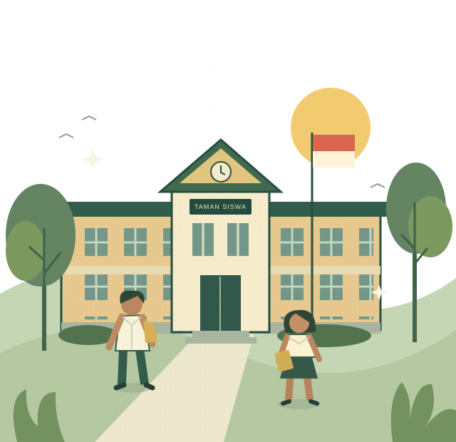

Rasa ingin tahu
Berani bertanya, mengeksplorasi ide, dan melihat setiap pengalaman sebagai kesempatan belajar.
RUANG UNTUK TUMBUH
Temukan semangat belajar, bangun karakter, dan berani melangkah bersama Taman Siswa Tebing Tinggi.

01 / MENGENAL KAMI
Pendidikan membuka jalan untuk mengenal diri, menghargai sesama, dan mengambil peran di dunia.
Taman Siswa Tebing Tinggi merupakan bagian dari Persatuan Perguruan Tamansiswa Cabang Tebing Tinggi. Kami mengajak calon peserta didik dan keluarga mengenal pilihan pendidikan dalam lingkungan perguruan.
Temukan pilihan pendidikanmu ↗Ing ngarsa sung tuladha
Ing madya mangun karsa
Tut wuri handayani
02 / PILIHAN PENDIDIKAN
Kenali unit pendidikan dalam naungan perguruan dan diskusikan pilihan yang sesuai dengan kebutuhan belajarmu.
PENDIDIKAN ANAK USIA DINI
Awal perjalanan pendidikan untuk membangun rasa ingin tahu, mengenal lingkungan, dan menemukan kegembiraan dalam belajar.
Informasi kurikulum, kegiatan, biaya, dan penerimaan peserta didik dapat ditanyakan langsung kepada pihak sekolah.
Tanya tentang TK ↗Daftar unit mengacu pada data yayasan Kemendikdasmen ↗.
03 / SEMANGAT KAMI
Tiga semangat yang ingin kami hadirkan dalam cerita pendidikan Taman Siswa.
Berani bertanya, mengeksplorasi ide, dan melihat setiap pengalaman sebagai kesempatan belajar.
Membawa sikap jujur, rasa hormat, dan tanggung jawab dalam langkah sehari-hari.
Mengembangkan potensi diri dan mengubah semangat menjadi karya yang bermakna.
Setiap mimpi besar
berawal dari keberanian
untuk mulai belajar.
04 / SEBELUM MELANGKAH
Informasi yang membantu kamu dan keluarga memulai perjalanan pendidikan.
Gunakan formulir di bawah untuk menyusun pertanyaan melalui aplikasi email, hubungi telepon yayasan, atau kunjungi alamat perguruan. Tim sekolah dapat menjelaskan alur penerimaan yang berlaku.
Data yayasan mencantumkan TK Swasta Tamansiswa, SMA Swasta Tamansiswa, SMK Swasta TI Taman Siswa, serta SMK Swasta Bisnis dan Manajemen Tamansiswa.
Biaya, kuota, persyaratan, dan jadwal penerimaan perlu dikonfirmasi langsung ke pihak sekolah sesuai unit dan tahun ajaran yang dituju.
Hubungi pihak perguruan untuk menanyakan waktu kunjungan dan unit sekolah yang ingin ditemui sebelum datang.
05 / MULAI CERITAMU
Hubungi kami untuk mengenal sekolah dan menanyakan informasi penerimaan peserta didik.
↗ 0621 21446Telepon yayasan↗ tamansiswatebingtt@gmail.comEmail yayasan↗ Jl. Deblod Sundoro No. 9, Tebing TinggiSumatera Utara • Lihat arah